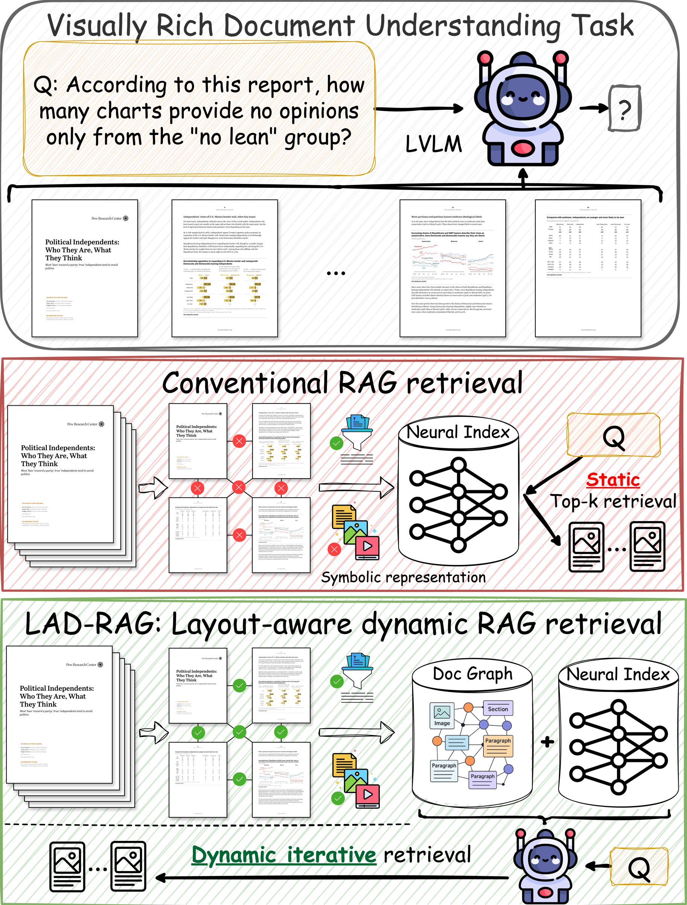
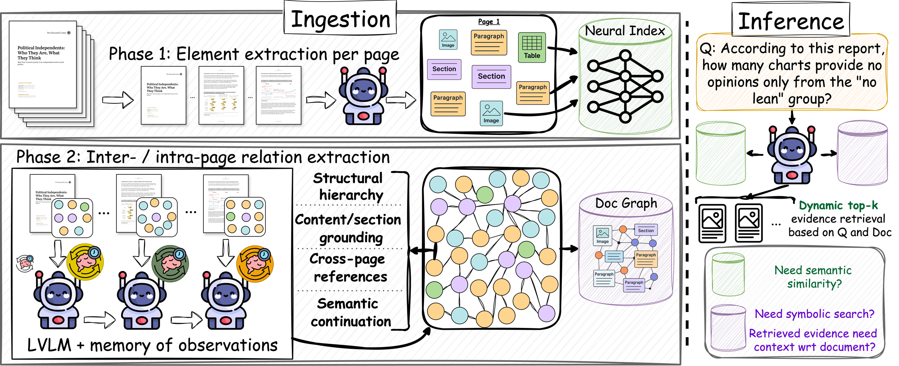
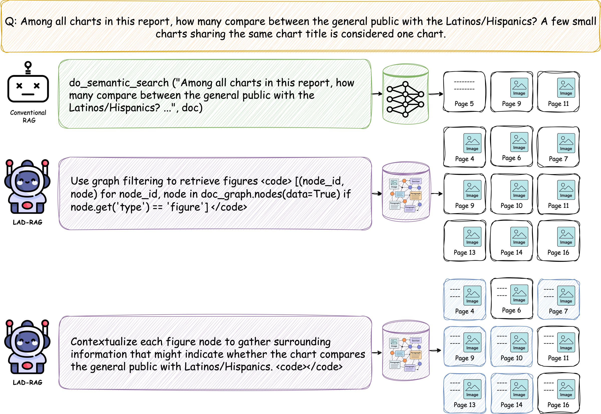
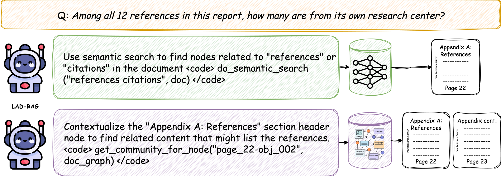
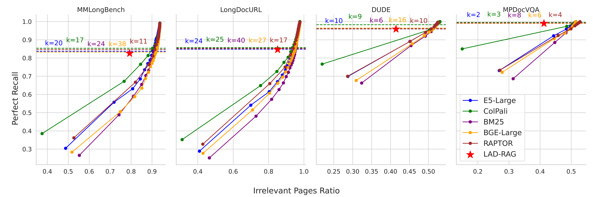
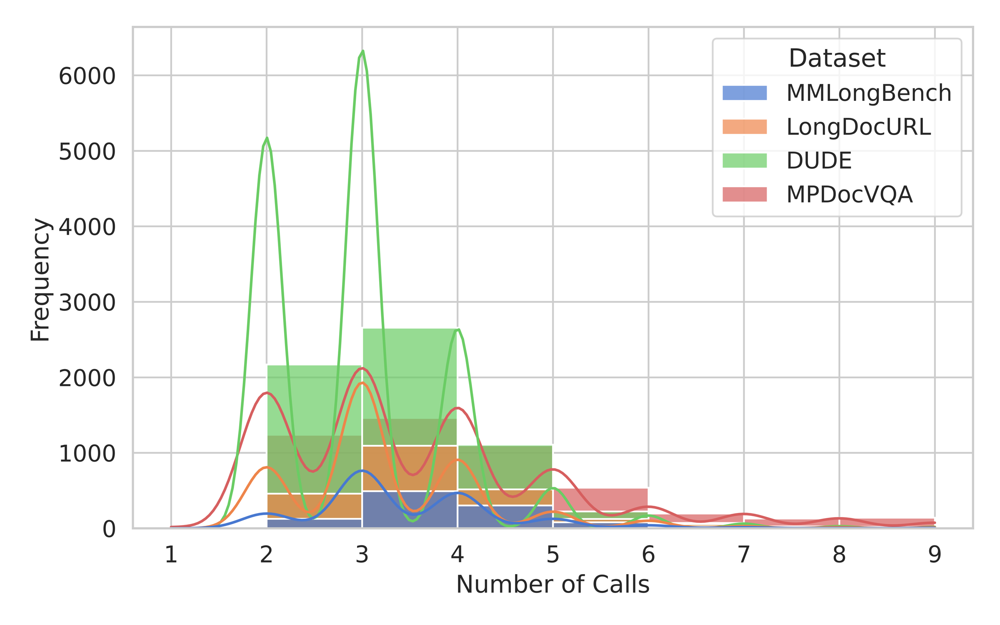
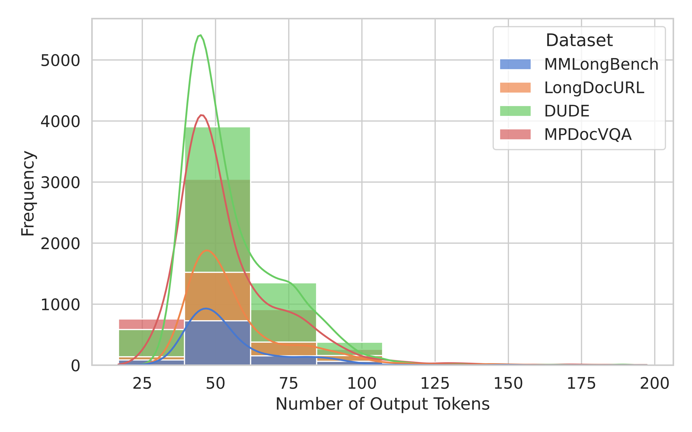

Question answering over visually rich documents requires reasoning over not only isolated content, but also layout, document structure, and cross-page dependencies. Conventional RAG pipelines encode pages or chunks independently and retrieve a fixed number of items at inference time, often missing the complete evidence needed for multi-page questions.
LAD-RAG addresses this by constructing a symbolic document graph during ingestion and storing it alongside a neural index. At inference time, an LLM agent dynamically interacts with both indices, choosing semantic search, graph-based search, or hybrid retrieval based on the query.
Visually rich documents contain figures, charts, tables, captions, section boundaries, and page-to-page continuations. These cues are often critical evidence, but they are difficult to recover from a purely embedding-based, fixed top-k retriever.
Headers, sections, captions, and visual grouping determine what belongs together.
Answers may require content scattered across figures, tables, and multiple pages.
Different questions require different amounts and kinds of supporting evidence.

LAD-RAG complements neural indexing with symbolic document structure and dynamic retrieval.
LAD-RAG has two phases: layout-aware ingestion and dynamic inference-time retrieval.
An LVLM parses each page into self-contained objects: titles, paragraphs, figures, tables, captions, and metadata.
Nodes represent page elements; edges encode section hierarchy, layout relations, references, and cross-page continuity.
LAD-RAG stores both a symbolic graph and a neural index over node summaries for complementary retrieval paths.
An LLM agent chooses semantic search, graph filtering, or contextualization depending on the question.

Framework overview: offline ingestion builds document representations; inference uses them adaptively.
LAD-RAG is designed for questions where semantic similarity alone is not enough. The agent can first search semantically, then switch to graph operations when the task requires structural evidence.
For questions asking about all charts with a property, LAD-RAG can retrieve all figure nodes first, then contextualize them with nearby layout and captions.
For reference or appendix questions, graph contextualization recovers continuation pages that weak semantic overlap may miss.

Case study: symbolic filtering and contextualization recover distributed chart evidence.

Case study: graph contextualization recovers a multi-page references section.
Retrieval is evaluated with Perfect Recall and Irrelevant Pages Ratio; QA is evaluated with binary accuracy.
Average retrieval completeness without top-k tuning.
Higher recall at comparable irrelevant-page ratios.
End-to-end QA approaches ground-truth evidence performance.

Retrieval performance across datasets. Red stars show LAD-RAG without top-k tuning.
Ablations show that both graph querying and contextualization improve retrieval. Graph querying contributes the largest gain, while contextualization helps recover structurally related evidence around retrieved nodes.
| Method | MMLongBench | LongDocURL |
|---|---|---|
| LAD-RAG | 0.979 | 0.895 |
| LAD-RAG w/o contextualization | 0.957 | 0.819 |
| LAD-RAG w/o graph query | 0.856 | 0.809 |
| LAD-RAG w/o both | 0.840 | 0.774 |
| RAPTOR | 0.877 | 0.853 |
| ColPali | 0.831 | 0.791 |
Values report the ratio of perfect recall to irrelevant page retrievals; higher is better.
Better retrieval improves downstream question answering, especially when questions require multiple evidence pages. LAD-RAG consistently narrows the gap between retrieved evidence and oracle ground-truth evidence.
| GPT-4o retrieval setting | MMLongBench | LongDocURL | DUDE | MP-DocVQA |
|---|---|---|---|---|
| Ground-truth evidence | 0.696 | 0.714 | 0.807 | 0.895 |
| Retrieving @ 10 | 0.610 | 0.622 | 0.706 | 0.819 |
| Top-k adjusted | 0.593 | 0.652 | 0.720 | 0.833 |
| LAD-RAG | 0.625 | 0.659 | 0.725 | 0.829 |
Scores are QA accuracy. The full paper reports results across InternVL2-8B, Pixtral-12B, Phi-3.5-Vision, and GPT-4o.
Graph construction happens offline during ingestion. At inference time, the retrieval agent typically uses only a small number of lightweight LLM calls over the pre-built graph and neural index.

Number of agent calls per query.

Generated tokens per retrieval call.
LAD-RAG makes RAG document-aware.
If you find LAD-RAG useful, please consider citing our paper:
@misc{sourati2026ladrag,
title={LAD-RAG: Layout-aware Dynamic RAG for Visually-Rich Document Understanding},
author={Zhivar Sourati and Zheng Wang and Marianne Menglin Liu and Yazhe Hu and Mengqing Guo and Sujeeth Bharadwaj and Kyu Han and Tao Sheng and Sujith Ravi and Morteza Dehghani and Dan Roth},
year={2026},
eprint={2510.07233},
archivePrefix={arXiv},
primaryClass={cs.CL},
url={https://arxiv.org/abs/2510.07233}
}